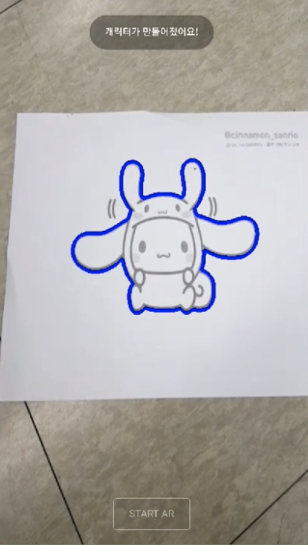
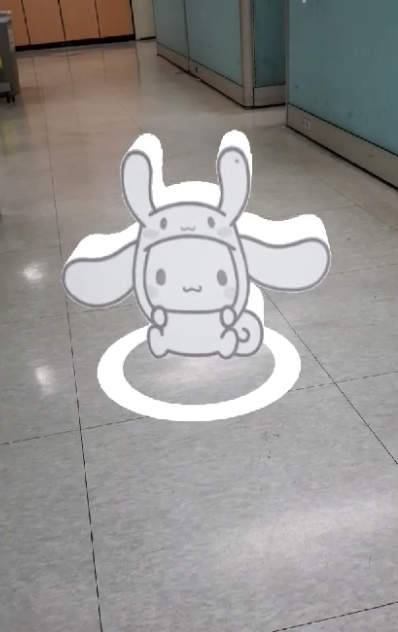
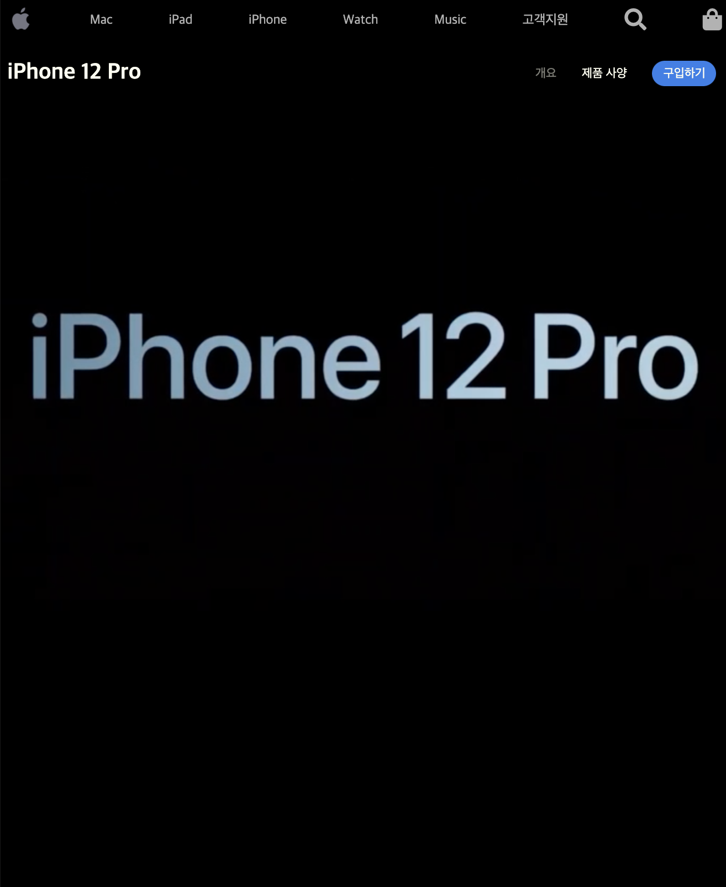

내가 그린 그림을 움직이는 3D로 만들어보자


어플리케이션 RakugakiAR(https://play.google.com/store/apps/details?id=co.whatever.doodle&hl=en_US&gl=US)
과 같이 user가 그린 그림을 ar을 이용하여 움직이는 3D 캐릭터로 만드는 웹 개발
기술 키워드 : html, css, javascript, opencv, webgl, threejs, webxr
머신러닝을 통한 졸음 운전 방지 기능을 추가한 네비게이션 어플리케이션 개발
기술 키워드 : MariaDB, Django, Arduino sketch, Anaconda, Jupyter notebook, opencv, Android Studio

apple iphone 12 클론 코딩
기술 키워드 : html, css, javascript, TweenMax, ScrollMagic